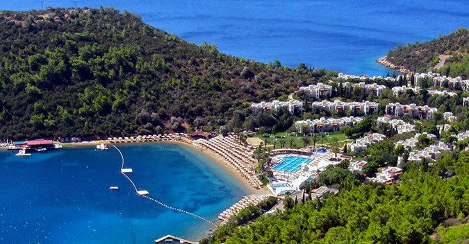
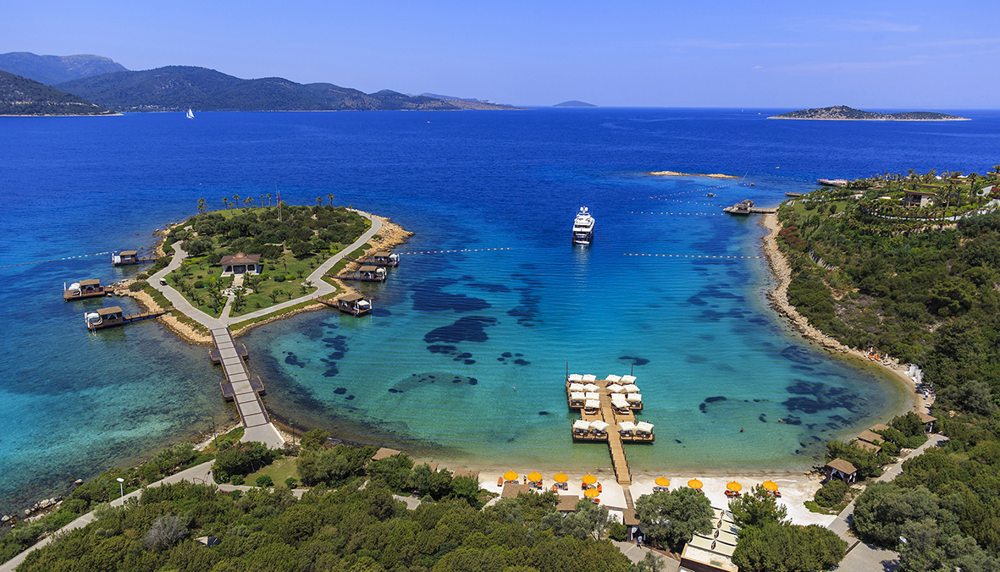
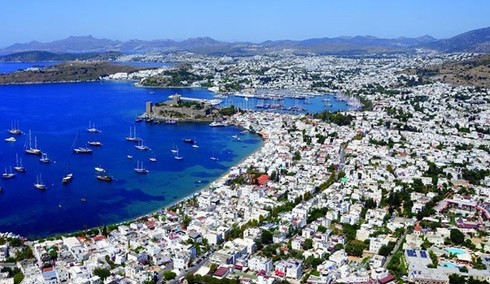

Bodrum je popularno tursko letovalište na obali Egejskog mora i luka u provinciji Mugla. U antičkoj Grčkoj je bio poznat kao Halikarnas, a u srednjem veku kao Petronium. Nalazi se na poluostrvu Bodrum, u blizini severozapadnog ulaza u zaliv Gekova, nasuprot grčkog ostrva Kos. Danas je poznati turistički i jahting centar. Nekadašnji Halikarnas je bio poznat po mauzoleju kralja Mauzola. Grad je vrlo popularno turističko odredište zbog svoje živopisne obale i živog noćnog života. Svake godine Bodrum poseti nekoliko stotina hiljada turista.
Istorija: Ribarsko selo do ranih sedamdesetih 20. veka, Bodrum je izgrađen na ruševinama antičkog Halikarnasa. Danas je najvažnije tursko letovalište, koje privlači pesnike, pevače, umetnike i turiste. Antički Grci su kolonizovali njegovu luku u 11. veku p. n. e. a kasnije je grad cvetao pod persijskom vlašću. Bio je glavni grad satrapije Karije, koja je uživala značajnu autonomiju. Ovde je rođen grčki istoričar Herodot (484–420. p. n. e.) otac istorije. Svojih devet knjiga „Istorije“ Herodot je pročitao pred slušaocima u Olimpiji, koji su prema priči Lukijana, helenskog pisca, rođenog oko 120. godine naše ere, dali delu simbolično ime „Muze“ iako je bilo poznatije pod imenom „Istorije“. Podela dela prema muzama, kojih ima devet, koliko i Herodotovih delova, odnosno knjiga Istorije ne potiče od samog Herodota, nego je nastala kasnije, najverovatnije pre poslednje četvrtine četvrtog veka p. n. e. Među istoričarima preovlađuje mišljenje da je podela izvršena u znak poštovanja prema nenadmašnom geniju i omiljenom pripodevaču Herodotu. Najveću slavu Halikarnas je doživeo pod vladavinom Mauzola, koji je njime vladao u ime Persijanaca od 377. do 353. p. n. e. Kada je umro 353. p. n. e., njegova žena, Artemizija II od Karije, angažovala je starogrčke arhitekte Satira i Pitisa i četiri skulptora, Brijaksa, Skopasa, Leohara i Timoteja da izgrade njegovu grobnicu. Njegova grobnica je jedno od Sedam svetskih čuda antičkog sveta, i postala je toliko poznata da je od nje nastala reč “mauzolej”, koja označava svaku monumentalnu grobnicu. Izgrađena je u obliku hrama dekorisanog reljefima i skulpturama na masivnoj osnovi; danas su od njega ostale samo temelji i nekoliko skulptura. Posle kratke vladavine Vitezova svetog Jovana, koji su podigli tvrđavu svetog Petra 1404, grad je počeo da propada. Tvrđava i grad su postali poznati kao Petronijum, od čega je i poreklo modernog imena. Sulejman Veličanstveni je osvojio Petronijum 1522. godine. Danas je zaštićena marina stecište luksuznih jahti i lokalnih galeta koji prevoze turiste..
 